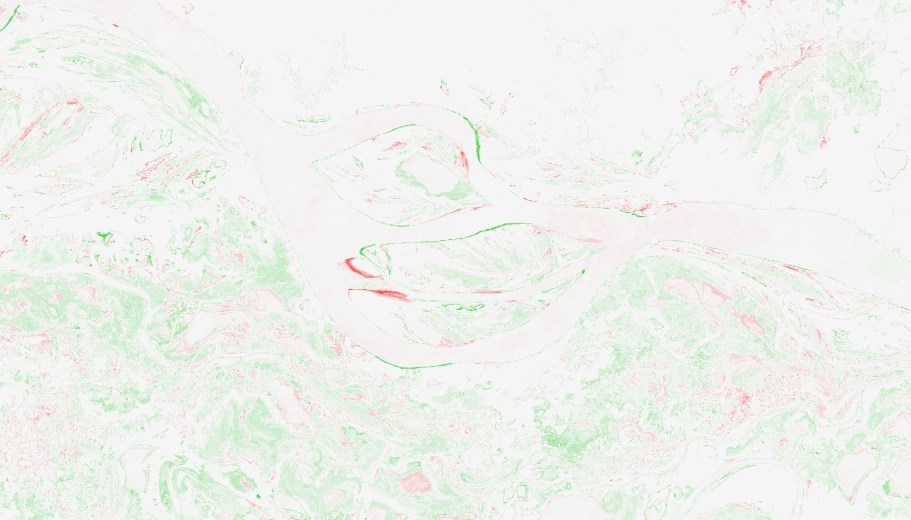

Análise de frequência fluvial na Amazônia
Definindo a coleção
Utilizando todos os conhecimentos acumulados até agora, podemos dar prosseguimento para um estudo específico da frequência fluvial na região amazônica. Para isso, utilizaremos imagens de radar da coleção Sentinel 1 presente na plataforma Earth Engine. Essa coleção é definida pelo código COPERNICUS/S1_GRD. Por questão de consistencia de dados, também precisaremos aplicar alguns filtros de parâmetros específicos como será visto no código a seguir:
// Ponto para delimitação da área de trabalho
var area_teste = ee.Geometry.Point([-57.1892, -2.5647]);
// Definição da coleção
var sentinel = ee.ImageCollection('COPERNICUS/S1_GRD')
.filter(ee.Filter.listContains('transmitterReceiverPolarisation', 'VH'))
.filter(ee.Filter.listContains('transmitterReceiverPolarisation', 'VV'))
.filter(ee.Filter.eq('instrumentMode', "IW"))
.filter(ee.Filter.eq('orbitProperties_pass', 'DESCENDING'))
.filter(ee.Filter.eq('platform_number', 'A'))
.filterDate('2017-01-01', '2022-12-31')
.filterBounds(area_teste);Os primeiros dois filtros aplicados (ee.Filter.listContains) garantem que todas as imagens da coleção tenham tanto as bandas das polarizações VH e VV. Os três filtros seguintes (ee.Filter.eq) delimitam características específicas desejadas, sendo elas o modo interferométrico do sensor (IW), de órbita descendente (DESCENDING), da plataforma Sentinel 1A. Por fim, limitamos as imagens para datas entre 2017 e 2022, num ponto específico da região.
Pré processamento
Em seguida, precisamos realizar dois processos que podem ser inseridos na mesma função:
- Filtrar valores extremamente baixos não representativos característicos do sensor SAR Sentinel 1 que aparecem nas bordas das imagens;
- Extrair as máscaras d’água com base nos valores das bandas VV e VH. Superfícies d’água são de fácil identificação usando essas bandas pois geralmente apresentam valores muito baixos, abaixo de -14 e -20 para as bandas VV e VH respectivamente.
A função, portanto, é a seguinte:
// Função para corrigir as imagens e extrair máscaras
function extrairMascara(im) {
// Remover valores muito baixos
var edge = im.lt(-30.0);
var mascara = im.mask().and(edge.not());
im = im.updateMask(mascara);
// Extrair máscara d'água
var vv = im.select('VV');
var vh = im.select('VH');
var mascaraDagua = vh.lt(-20).and(vv.lt(-14)).copyProperties(im, ['system:time_start']);
return mascaraDagua;
}
var mascaras = sentinel.map(extrairMascara);Primeiro caso: frequência média de água
De posse das máscaras d’água de toda nossa coleção, calcular a frequência média da ocorrência dos corpos d’água é simples. Basta utilizar a função de redução mean. Para melhorar a visualização, estaremos também utilizando uma paleta de cores customizada.
// Frequência média entre 2017 e 2022
var freqMedia = mascaras.mean();
var visMedia = {
min:0,
max:1,
palette:['white', 'skyblue', 'slateblue']
}
Map.centerObject(area_teste, 11);
Map.addLayer(freqMedia, visMedia, "Frequencia Média 2017-2022");Os valores neste objeto vão de 0 a 1, representando a frequência média em que um pixel d’água foi detectado. Visualmente, quanto mais azulado o ponto, maior a frequência de água.
Usando esse mesmo produto, podemos extrair uma máscara de corpos d’água em função da frequência de sua ocorrência. Por exemplo, para extrairmos uma máscara onde a água esteve presente em 90% das imagens, podemos usar o seguinte código:
// Máscara de 90% de frequência d'água
var freq90 = freqMedia.gt(0.9).selfMask();
Map.addLayer(freq90, {palette:['blue']}, "90% de frequência");Detalhando a frequência média
Apesar de muito úteis, o problema dos dois produtos anteriores é que somente com eles é impossível determinar a dinâmica de variação de frequência ao longo do tempo. Para fazer essa análise, podemos dividir nossa coleção em períodos distintos para observar a mudança nas frequências médias.
Frequência trienal
Em um primeiro exemplo, podemos dividir a coleção de máscaras pela metade em dois períodos:
// Divisão em triênios
var t1 = mascaras.filterDate('2017-01-01', '2019-12-31').mean();
var t2 = mascaras.filterDate('2020-01-01', '2022-12-31').mean();Agora que temos as frequências médias nestes dois períodos, a análise mais simples que podemos fazer é a de diferença das médias:
var difTrienal = t2.subtract(t1);
var visTrienal = {
min:-1,
max:1,
palette:['red', 'whitesmoke', 'limegreen']
};
Map.addLayer(difTrienal, visTrienal, "Diferença entre triênios");Note que agora temos mais detalhes da dinâmica de frequência. Valores avermelhados indicam que a presença de água foi mais frequente no primeiro período (corpos mais velhos que desapareceram), enquanto valores verdes indicam maior frequência no segundo período (corpos mais novos que surgiram). Valores brancos indicam pouca ou nenhuma mudança entre os dois períodos.

Frequência bienal
Podemos detalhar essa dinâmica um pouco mais dividindo nossa coleção em biênios:
// Divisão em biênios
var b1 = mascaras.filterDate('2017-01-01', '2018-12-31').mean().rename('b1');
var b2 = mascaras.filterDate('2019-01-01', '2020-12-31').mean().rename('b2');
var b3 = mascaras.filterDate('2021-01-01', '2022-12-31').mean().rename('b3');Para integrar esses biênios, podemos empilhá-los em uma única imagem como se cada um fosse uma banda diferente:
var difBienal = b1.addBands(b2).addBands(b3);
var visBienal = {
min:0.02,
max:0.98,
bands:['b1', 'b3', 'b2']
};
Map.addLayer(difBienal, visBienal, "Mudança bienal de frequências");Observe que agora há uma distinção maior na dinâmica de frequência. Além das cores vermelha e verde que representam maiores frequências velhas e novas respectivamente, temos também as cores magenta e ciano que representam a frequência nos períodos de transição entre o primeiro e segundo biênio; e o segundo e terceiro biênio respectivamente.
Conclusão
Esta análise é simples e de grande utilidade por permitir observar o comportamento dos corpos d’água na Amazônia em diferentes níveis temporais. Sua rápida aplicação é possível graças à plataforma Earth Engine que permite que uma quantidade grande de imagens sejam processadas simultaneamente e de maneira quase imediata. O código completo construído nesse guia pode ser encontrado neste link.